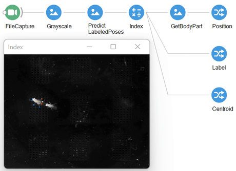

How to use
Bonsai.Sleap currently implements real-time inference on four distinct SLEAP networks through their corresponding Bonsai Predict operators.
flowchart TD
id1("`**IplImage**`") --> id7(Multiple Instances)
id1 --> id8(Single Instance)
id7 -- centroid --> id3("`**PredictCentroids**
Returns multiple:
*Centroid*`")
id7 -- top-down-model --> id4("`**PredictPoses**
Returns multiple:
*Centroid*, *Pose*`")
id7 -- top-down-id-model --> id5("`**PredictPoseIdentities**
Returns multiple:
*Centroid*, *Pose*, *Identity*`")
id8 -- single_instance --> id2("`**PredictSinglePose**
Returns single:
*Pose*`")
In order to use the Predict operators, you will need to provide the ModelFileName to the exported .pb file folder containing your pre-trained SLEAP model, along with the corresponding PoseConfigFileName to the training_config.json file.
The simplest Bonsai workflow for running the complete SLEAP top-down-id-model is:
If everything works out, you should see some indication in the Bonsai command line window that the GPU was successfully detected and enabled. The first frame will cold start the inference graph and this may take a bit of time, but after that, your poses should start streaming through!

Working examples for each of these operators can be found in the extended descriptions, which we cover below.
PredictCentroids
PredictCentroids implements the centroid network. This model is most commonly used to find a set of candidate centroids from a full-resolution image. For each frame, it will return a CentroidCollection which can be further indexed to access the individual instances.
As an example application, the output of this operator is also fully compatible with the CropCenter transform node, which can be used to easily generate smaller crops centered on the detected centroid instance (i.e. Centroid)
PredictPoses
PredictPoses implements the [top-down-model network]. The usual input of this operation will be a sequence of full frames where multiple instances are expected to be found. This operator will output a PoseCollection with N number of instances found in the image. Indexing a PoseCollection will return a Pose where we can access the Centroid of each detected instance along with the Pose containing information on all trained body parts.
To access the data of a specific body part we use the GetBodyPart. We set Name to match the part name defined in the training_config.json file. From that moment, the operator will always emit the selected BodyPart object and its inferred position (BodyPart.Position).
PredictPoseIdentities
PredictPoseIdentities evaluates the full SLEAP model network. In addition to extracting pose information for each detected instance in the image, it also returns the inferred identity of the object, i.e. it performs inference on the top-down-id-model network.
In addition to the properties of the Pose object, the extended PoseIdentity class adds Identity property that indicates the highest confidence identity. This will match one of the class labels found in training_config.json. The IdentityScores property indicates the confidence values for all class labels.
Since we are very often only interested in the instance with the highest identification confidence we have added the operator GetMaximumConfidencePoseIdentity which returns the PoseIdentity with the highest confidence from the input PoseIdentityCollection. Moreover, by specifying a value in the optional Identity property, the operator will return the instance will the highest confidence for that particular class.
PredictSinglePose
Almost all SLEAP operators afford the detection of multiple instances for each incoming image. However, in certain cases we might be interested in only identifying a single object in the incoming image. This strategy offers multiple advantages, specifically in terms of performance. In Bonsai.SLEAP, this functionality is implemented using the PredictSinglePose operator that implements a single_instance network. Since the centroid detection step is not performed by the network, the operator expects an already centered instance on which it will run the pose estimation. Moreover, the network will always return a single output per incoming frame, even if no valid instances are detected.
The following example workflow highlights how combining basic computer-vision algorithm for image segmentation for centroid detection, with the network-based pose estimation, results in >2-fold increases in performance relative to the previously introduced PredictPoses operator. In this example, the first part of the workflow segments and detects the centroid positions (output of BinaryRegionAnalysis) of all available objects in the incoming frame, which are then combined with the original image to generate centered crops (CropCenter). These images are then pushed through the network that will perform the pose estimation step of the process.
Finally, it is worth noting that PredictSinglePose affords two input overloads. When receiving a single image it will output a corresponding Pose. Since the operator skips the centroid-detection stage, it won't embed a Centroid field in Pose. Alternatively, a batch mode can be accessed by providing an array of images to the operator, instead returning PoseCollection. This latter overload results in dramatic performance gains relative to single images.